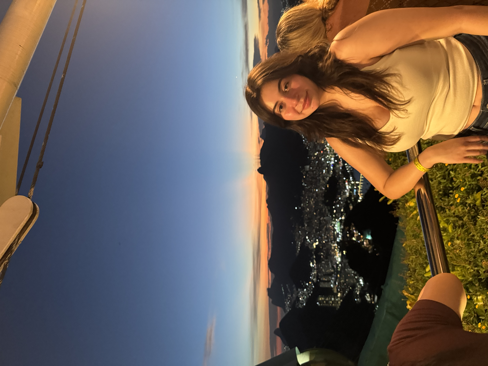
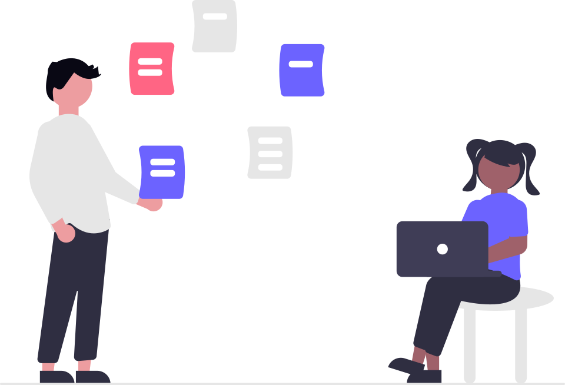

Hi! I'm Laysha...
I'm a third-year, first-generation college student at the University of Washington studying Computer
Engineering at the Paul G. Allen School of Computer Science & Engineering.
I'm a product of first-year programs like the Allen School Scholars Program (ASSP), the
College Assistance Migrant Program (CAMP), and the
Gaining
Early Awareness and Readiness for Undergraduate Program (GEAR UP).
I'm currently a CSE 195 Teaching Assistant where I help assist the
instructors with the Allen Scholars Summer Bridge and currently the Vice
President Internal at the
Society of Hispanic Professional Engineers (SHPE)
chapter at the University of Washington.

I'm passionate about...
Education

I believe that education is an incredible resource that can open many opportunities for us all
K-12 Outreach

I love showing others that there is representation of them in the STEM field and that there is many resources people can use to help them succeed
Community Involvement

I love getting involved on and off campus! Through student or public organizations
Coffee!
I really enjoy coffee! I probably have a caffeine addiction